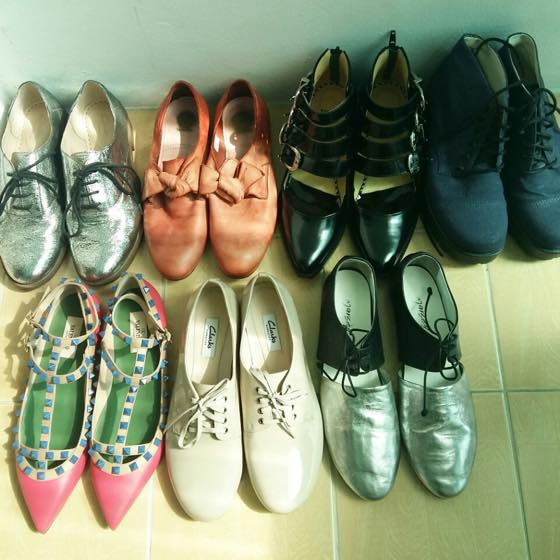
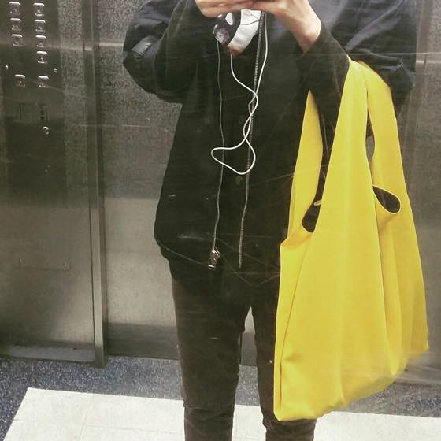
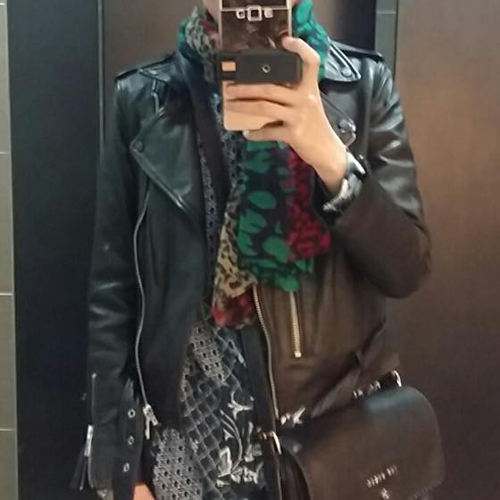
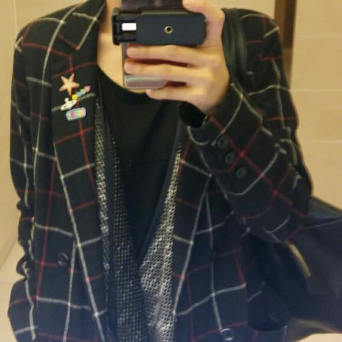

날이 금방 따듯해 지네요
추운날씨를 더 좋아하지만 그래도 봄, 여름엔 양말을 안신어도 된다는걸 매우 기뻐합니다 ㅋㅋㅋ
이제 요 예쁜이들을 부지런히 신어줄 시기가 되었군욤 ^^
위에서부터 L to R
클락스 은색 빤딱이 / 허드슨 리본 슈즈 / 토가풀라 / 얼반아웃피터스서 구매한 vagabond
발렌티노 핑쿠 락스터드 / 클락스 누드톤 / 마르셀 은색 컷아웃 슈즈
올해는 번쩍번쩍한 황금색을 사고 싶습니다 ㅋㅋㅋㅋㅋ
동생곰은 은색 클락스 신발을 신은 절 보고
실제로 저런 신발을 신는 사람을 보게되다니....라고 말했습니다 ㅋㅋㅋㅋㅋㅋㅋㅋㅋ
옥스포드 스타일 별로 안좋아했었는데
클락스 신은후로 넘 신세계라 요즘 이 스타일만 열심히 뒤지고 다닙니다 ㅋㅋㅋ

그리고 요 노랑이 MM6 가방도 개시 :)
자켓은 데무에서 구입한 가죽 자켓

자켓: 올세인츠
원피스: warehouse
가방: 테드베이커
가죽자켓을 정말 좋아하는데 (옷장하나를 깔별 종류별로 다 채우는게 꿈입니다 ㅋㅋ)
한국은 날이 금방 더워져서 입을 수 있는 시기가 짧다는게 슬프네욤 ;ㅂ;

결국 제일 자주 입고 다니는건
주변에서 젭알 그만좀 입으라는(....) 얼반아웃피터스에서 구입한 체크자켓
주머니도 큼직하고 최고 맘에듭니다 ^^;;;
세상에 셀카찍은거 뒤져봐도 90% 확률로 이 자켓과 스카프를 하고있어 ㅋㅋㅋㅋㅋㅋㅋㅋㅋㅋㅋㅋㅋㅋㅋㅋㅋㅋ
요즘 뜬금없이 내얼굴이나 몸에서 맘에안드는부분을 집중해서 찾아내는일을 그만해야겠다는 생각이 듭니당 :p
(완벽하게 그만둘순 없지만 최소한 줄이기라도 ^^;;;)
얼굴에서 이게 맘에안들고 팔다리는 이게 맘에안들고 이것저것 단점 찾는데 집중했는데
문득 이게 전혀 나에게 도움이 되지 않는다는걸 깨닫게 되네욤 ^^;;;
엄마님 말대로 하루한번 아임쏘쿠우우울~~ 을 외쳐야 겠어 ㅋㅋㅋㅋㅋㅋㅋ
모두 좋은하루 되세욤 :D :D :D